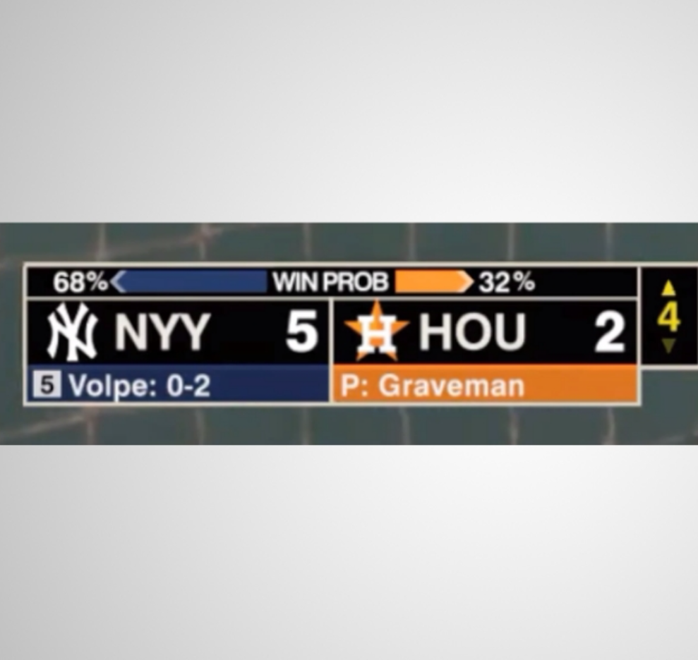

Game Context
Game number, day of week, day/night, duration, home/away, and extra innings.
Baseball Win Probability
An early machine learning experiment inspired by the win-probability graphics shown during baseball broadcasts. Historical Retrosheet game data was used to explore whether a neural network could estimate how likely a team was to win as a game progressed.
Can game context, the current score, and a team's season performance be combined into a useful in-game win estimate?
01 · The Inspiration

Broadcast reference image used as inspiration for the project concept.
I was interested in the win-probability meters that update throughout live sports broadcasts and wanted to understand how a simplified version could be built for real-time analysis.
The goal was to create a general method predictor that could be used for any team stats. I used the Los Angeles Dodgers (my favorite team) as my main proof of concept, to keep this project manageable.
02 · The Data
Historical game records were manually collected from Retrosheet and reorganized into a consistent team-versus-opponent representation. I chose a manual workflow rather than building a scraper for ethical reasons.
Historical records covering the project period were converted into model-ready features describing the game context and both teams' up-to-date season performance.
Game number, day of week, day/night, duration, home/away, and extra innings.
Team score and opponent score, treated as explicit game-state context.
Hits, doubles, triples, home runs, RBI, walks, strikeouts, steals, and runners left on base.
Pitchers used, earned runs, errors, double plays, and related team-level statistics.
03 · Model & Approach
The main modeling idea was that the same statistics should not mean exactly the same thing at every point in a game. A two-run lead in the second inning is different from a two-run lead in the eighth.
The final PyTorch experiment separately processed score and game duration, combined those signals with learned game features, and passed the resulting representation through dense layers for a two-class 'Win or Lose" prediction.
04 · Real-Game Tests
I manually created partial snapshots from two 2023 games and evaluated the model at the end of the 4th, 6th, and 8th innings. This was the closest part of the project to the live broadcast idea.
September 9, 2023
The original values can be dropped into these three checkpoints once recovered.
October 1, 2023
This layout is ready to become a true probability timeline instead of another paragraph.
05 · Result
The final saved experiment correctly classified the eventual winner in approximately 91.9% of the held-out test games.
Important: this is classification accuracy, not probability calibration. A stronger version would explicitly evaluate calibration, chronological generalization, and uncertainty before treating the output as a production-quality live win probability.
06 · Reflection
This project combined two interests: baseball and predictive modeling. It gave me hands-on experience turning messy real-world data into a complete ML workflow — collecting and cleaning data, designing features, training a neural network, and testing it on partial game states.
Looking back, the most valuable part is being able to see what I would improve now with a stronger ML perspective.
Project Resources
Data came from Retrosheet. My public work and other projects are available on GitHub.